行程速览
三天一条湖—禅—河的人文线：第一天环湖读史，第二天进山问茶，第三天沿苏堤告别、去运河收梢。节奏松，地铁 + 步行 + 一段骑行就能走完。
Day 1 · 环西湖，从断桥开始
关键词：断桥、白堤、三潭印月、河坊街。第一天沿着苏东坡与白居易走过的湖岸，把西湖的经典面慢慢展开。
怎么去杭州（上海出发）
上海虹桥 / 上海东 → 杭州东，最快约 45 分钟、多数车次 1 小时上下，二等座约 73–110 元（以 12306 为准）。班次密集，杭州东站地铁 1 号线直达湖滨——当天决定当天走都来得及，正适合日期待定的这趟。
上海 → G60 沪昆高速 → 杭州，全程约 180 公里、2.5 小时上下。注意西湖景区周末与节假日实行单双号限行、灵隐一带管控更严，抵达后建议车停酒店、改地铁与骑行出行。
地铁 1/3/4/7 号线覆盖主要区域；西湖环湖靠步行与公共自行车（小红车扫码即骑），运河、西溪都在地铁沿线。
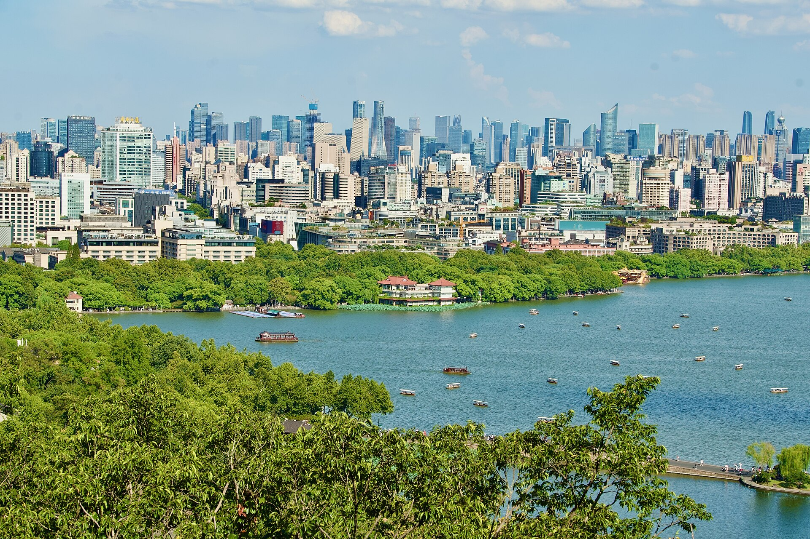
从断桥走到湖心的三座塔
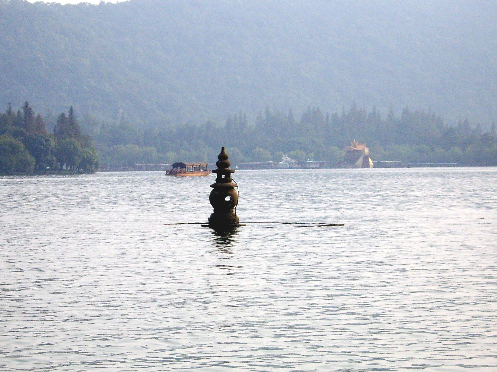
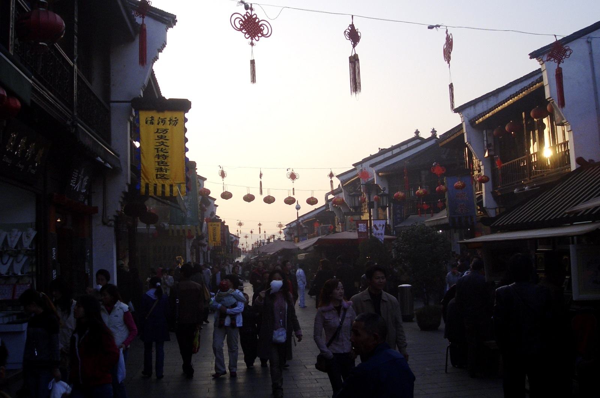
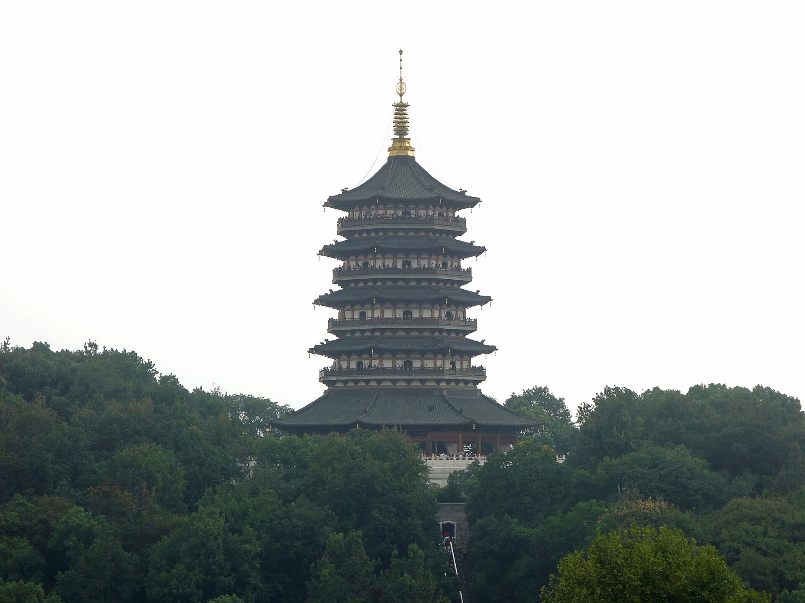
Day 2 · 进山问禅，下村问茶
关键词：飞来峰石刻、灵隐香火、龙井茶园、九溪烟树。离开湖面往西边的山里走，是西湖以西最有味道的一天。
从灵隐寺走到九溪的溪水里
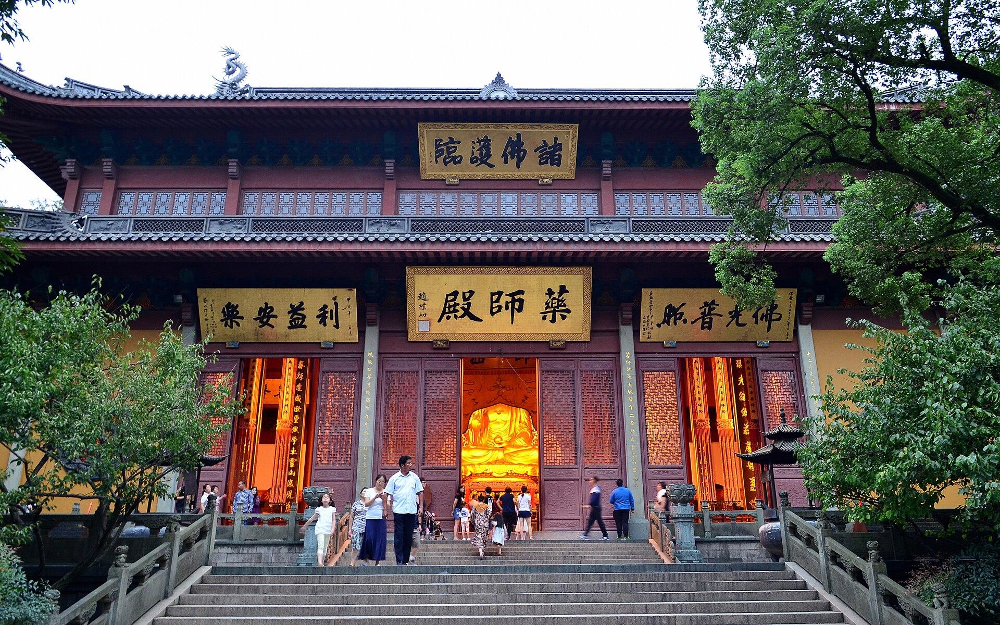
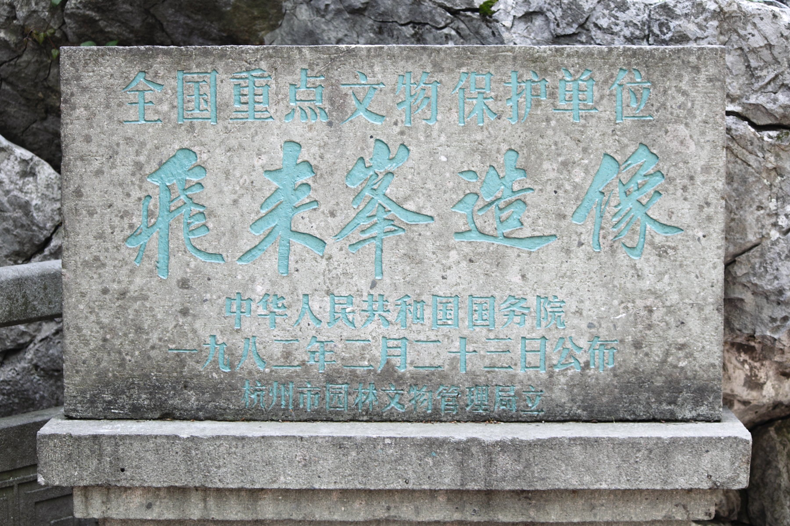
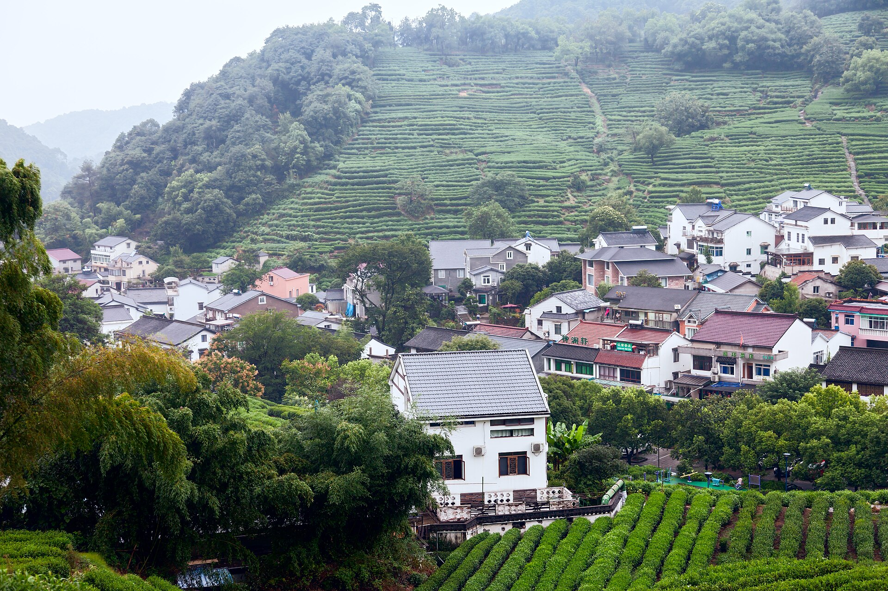
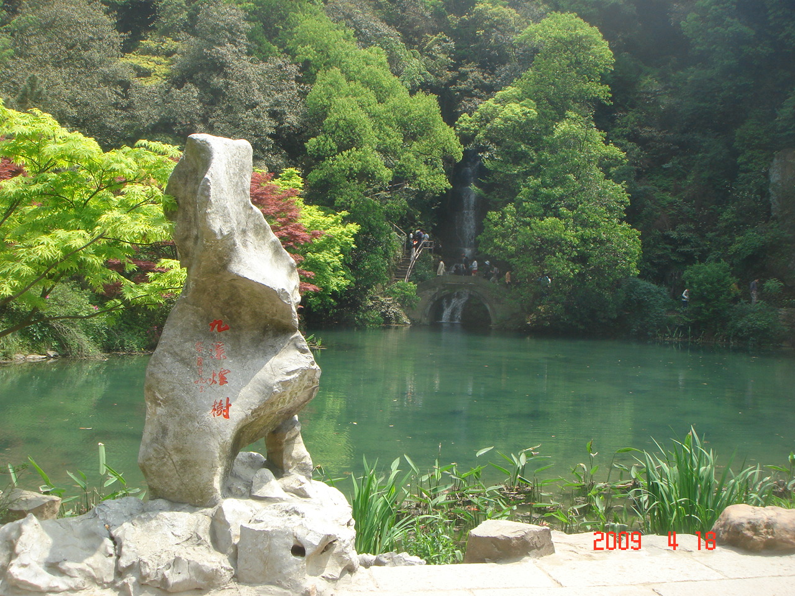
Day 3 · 苏堤晨走，运河收梢
关键词：苏堤六桥、雷峰塔登顶、拱宸桥。上午把西湖最后一段经典走完，下午去大运河边喝杯咖啡，从容返程。
从苏堤的晨雾到运河的暮色
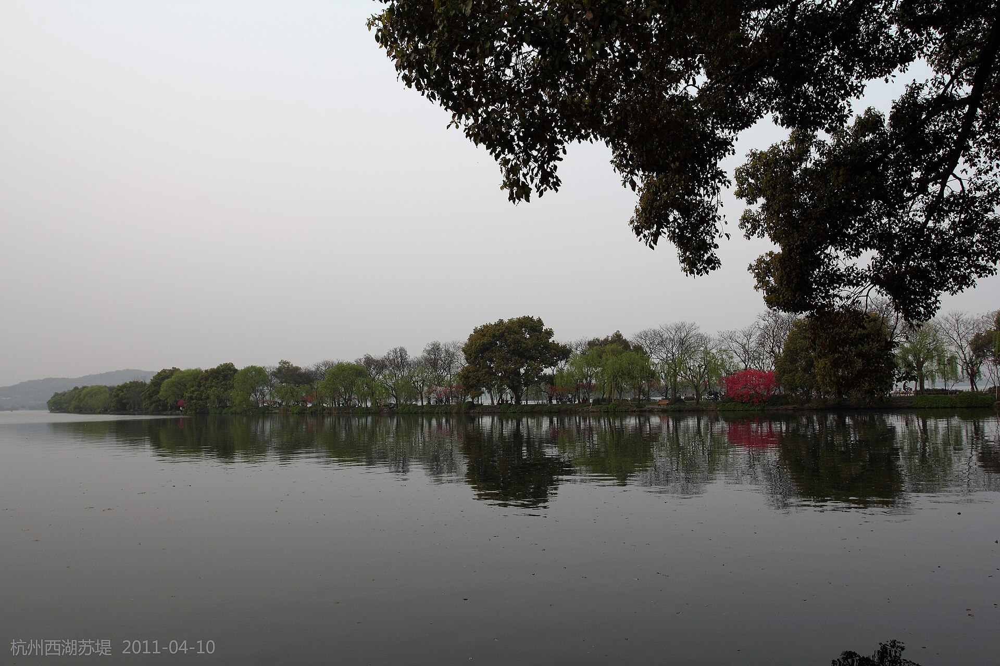
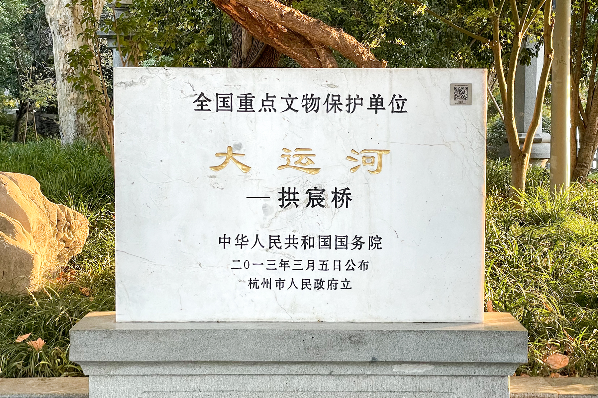
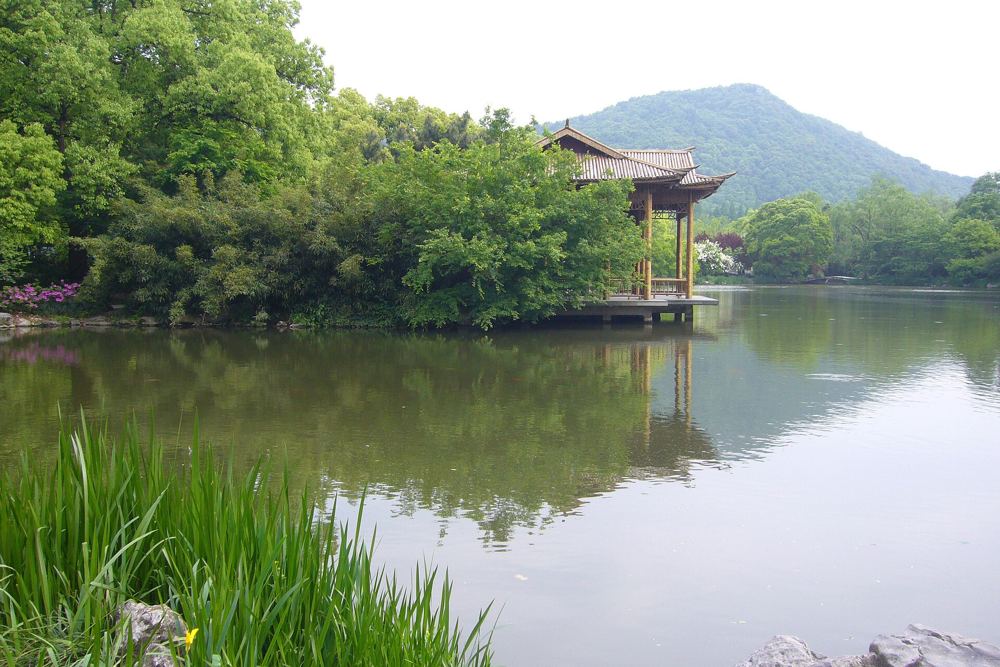
住在哪里
两个思路：住湖滨推窗见湖、步行环湖；住运河或茶园图一份清静。价格为常规参考区间，以预订平台实时价为准。
湖滨商圈湖景酒店
龙翔桥地铁站上盖，出门就是西湖。Day 1 全程步行可达，清晨下楼就是断桥——住这里等于把西湖变成自家后院。
老城精品民宿
住在南宋御街的巷子里，晚上逛河坊街不用赶末班车，清晨还能去吴山城隍阁看日出，烟火气十足。
龙井茶园民宿
睡在茶田上方的山宿里，清晨被鸟叫醒，推窗就是雾气缭绕的茶山。适合想把 Day 2 过成"茶之旅"的人。
桥西设计酒店
老厂房改造的运河边酒店，晚上沿着河走一圈，看货船灯火与拱宸桥的倒影。第三天返程动线最顺。
杭州味道
杭帮菜的底色是清鲜本味：一条醋鱼、一盏龙井、一碗片儿川——这三样吃明白了，杭州就吃明白了一半。
一杯明前龙井、几道茶香农家菜，坐在层叠的茶田边——这是杭州独有的吃饭方式（真实照片 · 龙井村）。
西湖醋鱼楼外楼
草鱼饿养两日再烹，浇糖醋汁——评判标准是"有蟹味"。孤山脚下的楼外楼是百年原产地。
东坡肉知味观
方块五花肉慢火焖到酥而不碎，色泽红亮入口即化，配一碗白饭就是杭州的待客之道。
龙井虾仁杭帮菜馆
河虾仁配明前茶芽，清淡里透着茶香——想同时喝到茶与吃到江南，点它。
片儿川奎元馆
雪菜、笋片、瘦肉浇头的碱水面，杭州人的一天从这碗面开始。百年老店奎元馆是标准的打卡处。
葱包桧街头小吃
春卷皮裹油条与葱段在铁板上压烤，刷甜面酱——名字里压着对秦桧的怨念，是杭州最市井的下午茶。
定胜糕河坊街
米粉蒸成的小糕，粉粉的莲花形，豆沙馅微甜——南宋传下来的"出征必胜"彩头。
虾爆鳝面奎元馆
河虾过油、鳝背爆炒，浇头铺满一碗——"江南面王"的看家本领。
猫耳朵知味观
形似猫耳的小面疙瘩配火腿虾仁，杭州面食里最俏皮的一道，乾隆下江南的传说给它加了不少分。
桂花糖藕 · 栗羹秋季限定
桂花是杭州秋天的主题：糖藕淋桂花蜜、糖炒栗子配一袋边走边吃，季节感拉满。
叫花鸡杭帮菜馆
荷叶裹整鸡带泥煨烤，敲开泥壳的瞬间满桌荷香——适合人多的餐桌分食。
西湖龙井伴手礼
明前茶金贵、雨前茶实惠，认准正规茶庄与包装标识；买散茶先试后买，少量为宜。
九曲红梅小众伴手礼
杭州自己的红茶，产自双灵村，汤色琥珀、蜜香柔和——比龙井冷门，却常给人惊喜。
老字号密度最高，知味观总店与小吃摊都扎堆在这，第一晚就安排。
百年面馆，片儿川与虾爆鳝面二选一，中午去不用排长队。
香积寺旁的运河美食街，环境好、适合晚餐收尾，与拱宸桥连成一线。
武林广场附近的夜市街，小吃与手作摊齐全，Day 2 晚上的好去处。
实用贴士
日期待定，先把"坑"摸清楚——预约、限行和买茶这三件事最值得提前做功课：
票务与预约
西湖环湖免费；灵隐 = 飞来峰门票 + 香花券两道票；雷峰塔、三潭印月船票现场或官方渠道购买即可，无需抢约。
景区限行
西湖风景区周末与节假日对小型车实施单双号限行，灵隐、南山路一带管控更严——自驾务必把车停酒店，景区内靠地铁、公交与骑行。
季节选择
春季桃柳夹岸、苏堤最美但人最多；秋季满陇桂雨、九溪红叶；夏季看荷但闷热；冬季断桥残雪可遇不可求。雨天的西湖别有味道，备一把伞不亏。
买茶避坑
龙井村买茶先问价、少量试、别信"家传御茶"；想稳妥就去正规茶庄或知味观、狮峰门店。明前与雨前差价大，自饮选雨前更划算。
骑行与步行
环湖骑行用公共自行车（小红车）扫码最方便，注意白堤、苏堤禁止骑行只能推行；景区台阶多，穿舒适的鞋。
节奏建议
灵隐赶早、苏堤赶早，人少是杭州最好的滤镜；避开法定节假日的湖滨午后人潮；返程高峰在周日傍晚，杭州东站提前 30–40 分钟到。